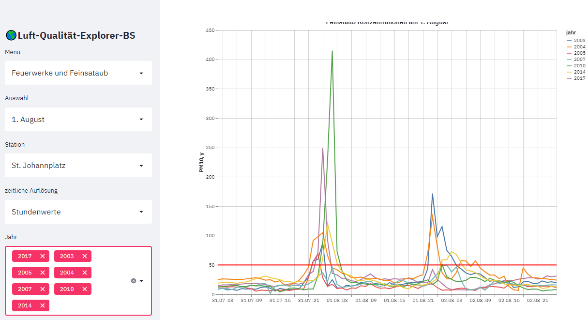
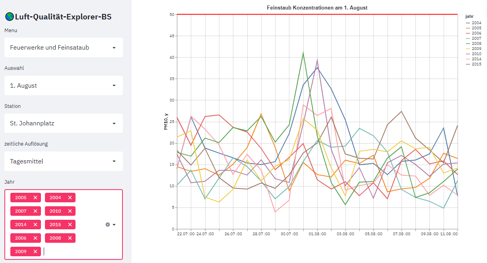

Feuerwerke und Feinsataub
Feuerwerke erzeugen Rauch und damit Feinstaub. Die resultierende Zunahme der PM10 und PM2.5 Konzentrationen lassen sich in der basler Luft in den meisten Jahren gut am Silvester und am 1. August beobachten. Die Feinstaub-Spitzen lassen sich auch in der Liniendiagramm-Grafik darstellen, allerdings jeweils nur ein einziges Jahr. Die Menuoption Feuerwerke filtert die Daten bereits nach den relevanten Tagen und überlagert die Feuerwerk-Spitzen der verschiedenen Jahre. In der Multisectbox "Jahr" können ein oder meherere Jahre ausgewählt und miteinander verglichen werden.

Zeitliche Auflösung: Unter der Option zeitliche Auflösung können Stundenwerte oder Tagesmittelwerte ausgwählt werden: - Bei Stundenwerte wird das Zeitintervall des Ereignis (1.1. oder 1.8) plus minus ein Tag ausgewählt. Stundenwerte zeigen den Anstieg und Abfall der Konzentration am detailliertesten. Bei dieser Darstellung kann die Höne der Spitze aber darüber hinwegtäuschen, dass ein kurzer intensiver Anstieg wenig Einfluss auf den Tagesmittelwert hat, während eine tiefere, aber länger andauernde Spitze, den Tagesmittelwert stärker beeinflussen kann. - Tagesmittelwerte werden zusammen mit dem Grenzwert für PM10 angezeigt. Es wird ein Zeitintervall von plus/minus 10 Tage angezeigtDie Werte sind am 1. August generell rund 10-15µg/m³ höher, doch ist die Abweichung von der Basislinie viel weniger prominent als bei den Staundenwerte. Beim Neujahresfeuerwerk sind die Tagesmittelwerte kaum vom Grundrauschen der PM10 Konzentration zu unterscheiden, welches in dieser Jahreszeit von den Emmissionen der Heizungen beeinflusst ist.

Zeitfenster Das Zeitfenster definiert, wieviele Tage vor und nach dem Ereignis angezeigt werden sollen. Wird zum Beispiel für den 1. August ein Fenster von 3 gewählt, so wird der Tag des Ereignisses (1.8.) sowie je ein Tag vor und nach dem Ereignis angezeigt. Für Tagesmittelwerte können grössere Zeitfenster gewählt werden, zum Beispiel 21 Tage (10 Tage vor und 10 nach dem Ereignis"). So kann untersucht werden, ob das Feuerwerk auch unter Berücksichtung eines grösseren Zeitfensters als Anomalie erkennbar bleibt.